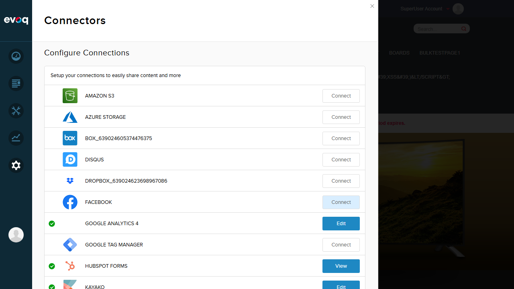

Feature Description
Create and manage custom tracking rules based on specific pages and user roles for targeted analytics. This feature allows users to add up to 5 segmentation rules, each with a Label, Value, Page selection, and Role selection.
Expected Functionality (per code review)
- Add new segmentation rule (up to 5 rules)
- Edit existing rule
- Delete rule
- Configure rule with specific page selection
- Configure rule with specific role selection
- Configure rule with 'Any Page' option
- Configure rule with 'All Users' role
- Reorder rules (move up/down)
- Validate maximum 5 rules limit
- Label and value field validation (50 char max)
Test Investigation
NOT TESTABLE VIA UI
Steps Taken
- Resized browser to 1280x720 for proper screenshot capture
- Logged in as SuperUser (host / Pass123456)
- Reviewed source code files:
connector.htm - Contains Advanced Settings link (line 7)advanced.htm - Contains Segmentation Rules UIconnector.js - Contains JavaScript logic for rules managementGoogleAnalyticsConnector.cs - Contains backend logic
- Navigated to Admin > Settings > Connectors
- Located and clicked Edit on "Google Analytics 4" connector
- Examined the connector settings panel for Advanced Settings link
- Attempted to trigger feature by changing tracking ID to UA- format
- Verified the Advanced Settings link is NOT present in the UI
Screenshot 1: Login Verification & Connectors Panel

Shows successful login as SuperUser Account and the Connectors panel with Google Analytics 4 connector visible.
Screenshot 2: Google Analytics 4 Settings

Shows the Google Analytics 4 connector settings with Measurement ID and Track for Administrators options. Note: No Advanced Settings link is visible.
Screenshot 3: Settings with UA- Tracking ID

Shows the connector settings after changing to a Universal Analytics (UA-) tracking ID format. The Advanced Settings link still does not appear.
Code Analysis
Evidence of Feature in Code
The following code files confirm the Segmentation Rules feature exists in the codebase:
1. connector.htm (Line 7)
<a class="advancedSetting" href="#" data-bind="attr: {title: resx.AdvancedSettings}"></a>
This link should open the Advanced Settings dialog containing Segmentation Rules.
2. advanced.htm (Lines 18-96)
<div class="addRule" data-bind="visible: rules().length < 5">
<a href="#" data-bind="html: resx.AddRule, click: addRule"></a>
</div>
<div data-bind="html: resx.SegmentationRules" class="title"></div>
<div class="rule-grid">
<!-- Rule management UI with Label, Value, Page, Role columns -->
</div>
Contains the full UI for managing segmentation rules with add, edit, delete, and reorder functionality.
3. connector.js (Lines 327-415)
var onAddingRule = function(e) { ... }
var onEditRule = function(item, e) { ... }
var onDeleteRule = function(item, e) { ... }
var onMoveUp = function(item, e) { ... }
var onMoveDown = function(item, e) { ... }
Contains JavaScript handlers for all rule operations.
Why Feature is Not Visible
The deployed "Google Analytics 4" connector uses a different UI component template that does not include the .advancedSetting link. The current template only shows:
- Measurement ID field
- Track for Administrators checkbox
- Cancel, Save, Delete Connection buttons
The original connector.htm template (which includes Advanced Settings) is not loaded by the GA4 connector.
Observations
Code suggests the Segmentation Rules feature exists, but no UI element found to test it.
Key Findings
| Finding |
Details |
| Connector Name in UI |
"Google Analytics 4" (not "Google Analytics") |
| Advanced Settings Link |
NOT present in the current UI template |
| connector.htm Template |
Contains Advanced Settings link but is NOT loaded for GA4 connector |
| GA4 Component Template |
Uses a simplified template without Advanced Settings |
| UA- Tracking ID Test |
Changing to UA- format did NOT reveal Advanced Settings |
Possible Explanations
- Feature Deprecation: The Segmentation Rules feature may have been deprecated when migrating from Universal Analytics to GA4.
- Different Connector Version: The GA4 connector may be a newer version that doesn't support this legacy feature.
- Installation Issue: The original Google Analytics connector (with Advanced Settings) may not be installed or may have been replaced by GA4.
- Template Override: The GA4 connector uses a dynamically loaded component that bypasses the connector.htm template.
Recommendation
To test the Segmentation Rules feature, the system would need:
- The original Google Analytics connector (not GA4) to be installed and available
- OR the GA4 connector to be updated to include the Advanced Settings link
- OR the connector.htm template to be loaded instead of the current GA4 component template
Test Summary
| Category |
Status |
Notes |
| Feature Accessible via UI |
NO |
Advanced Settings link not present |
| Feature Exists in Code |
YES |
Full implementation in connector.htm, advanced.htm, connector.js |
| Individual Test Scenarios |
N/A |
Cannot be executed - no UI entry point |
Overall Result: The Segmentation Rules Management feature cannot be tested through the UI because the entry point (Advanced Settings link) is not present in the current Google Analytics 4 connector interface. Per testing guidelines, individual test scenarios are not created for features that exist in code but are not visible in the UI.